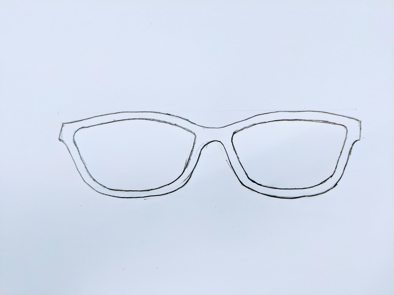
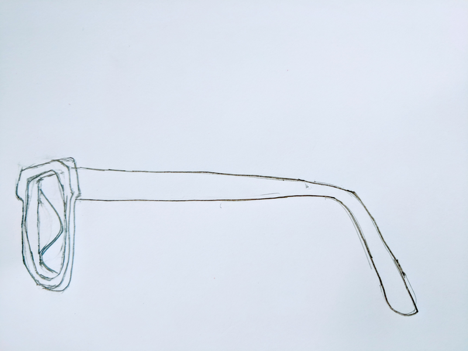
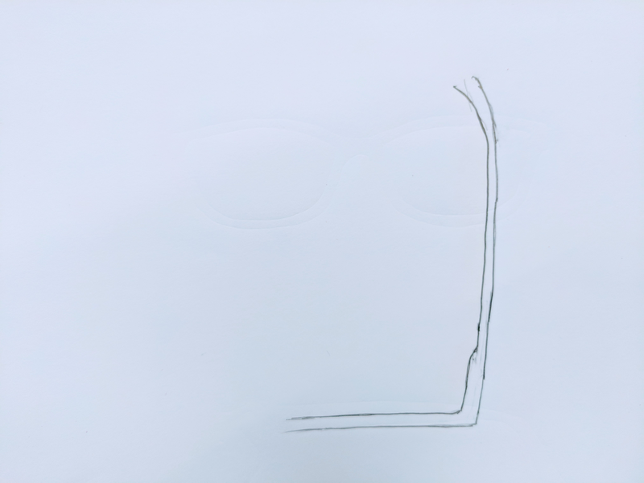
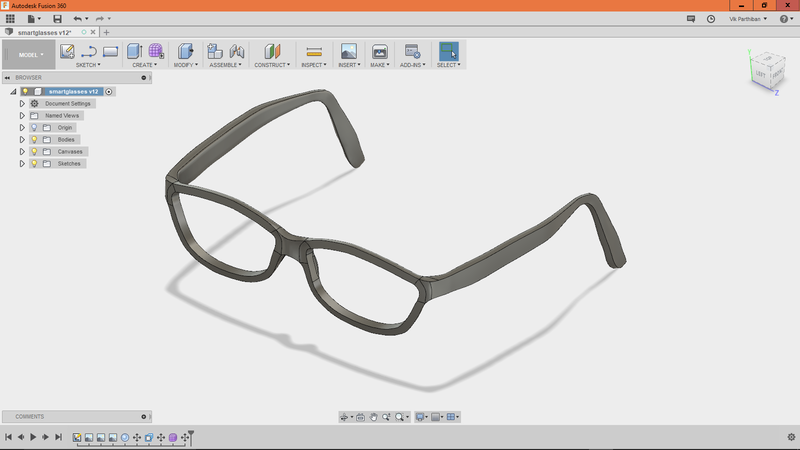
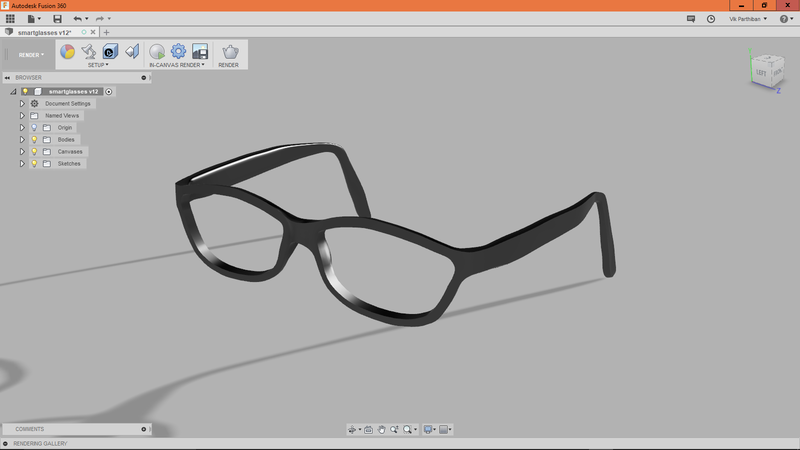
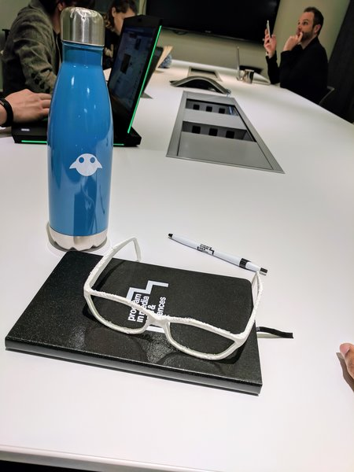

Source: Mashable.
Source: Mashable.
After working in the Augmented Reality and Holography space for a little while, I thought it would be neat to make my own AR prototype glasses for my final project. Imagine walking around and experiencing a live 3D object rendered in front of you.
Source: Mashable.
And you could play immersive games!
 Source: The Machines, Directive Games.
Source: The Machines, Directive Games.
First, I sketched the eyewear using my own glasses as a mockup.
 " WIDTH=400 HEIGHT=300> 
Secondly, I ported these sketches to Fusion 360 and modeled it using t-splines.

And here's the rendered version

Just for kicks I 3D-printed it using a Ultimaker 2 printer, and it actually fit on my face really well! The nose area was the smoothest.

Special thanks and credit to William Kempton and his tutorial on using t-spline sculpt mode.